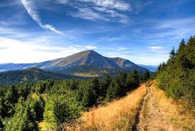

Гора Петрос
Пе́трос — гора в Українських Карпатах, у Рахівському районі Закарпатської області. Одна з найвищих вершин гірського масиву Чорногора. Популярний об'єкт пішохідного туризму.
Назад до головноїПе́трос — гора в Українських Карпатах, у Рахівському районі Закарпатської області. Одна з найвищих вершин гірського масиву Чорногора. Популярний об'єкт пішохідного туризму.
Назад до головної